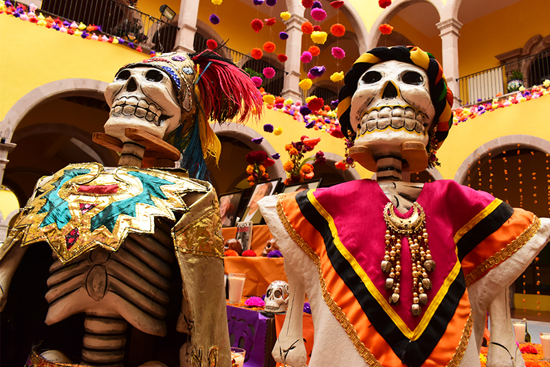

AGUASCALIENTES
Aguascalientes, oficialmente Estado Libre y Soberano de Aguascalientes, es uno de los treinta y un estados que, junto con la Ciudad de México, conforman México; se ubica en la región centronorte de México y parte del Bajío mexicano. Su capital y ciudad más poblada es Aguascalientes.
Previo a la conquista de América, el territorio fue punto de encuentro de distintos aguerridos señoríos chichimecas. Los españoles establecieron pequeñas poblaciones coloniales desde mediados del siglo XVI, incluida la actual capital, y el territorio perteneció a la Nueva Galicia (Jalisco) durante casi toda la colonia; donde desempeñaba un rol agropecuario y de punto de descanso en la Ruta de la Plata. Pasó a ser parte de Zacatecas brevemente, pues fue declarado territorio independiente en 1835 mientras el estado vecino se sublevaba, aunque no fue sino hasta la Constitución de 1857 que fue reconocido como estado. La época porfiriana benefició enormemente a Aguascalientes con la industria del Ferrocarril Central Mexicano, provocando una explosión poblacional y artística. Hospedó la Convención Revolucionaria de 1914, y luego fue escenario de la Guerra Cristera. Desde la década de 1980 ha vuelto a entrar en una explosión demográfica, a manos de la industria textil, automotriz y electrónica; sin dejar de lado las actividades agropecuarias. Es reconocido como uno de los estados más seguros y de mayor crecimiento económico de México.
Con 5618 km² representa el 0.3 % del territorio nacional, siendo la cuarta entidad federativa más pequeña del país, por detrás de Ciudad de México, Tlaxcala y Morelos. Se encuentra a una latitud de 22° N, con altitud promedio de 1950 m sobre el nivel del mar. El estado de Aguascalientes yace sobre un valle del mismo nombre, que forma un corredor norte-sur eminentemente de clima estepario o semiseco (BSk), conectando las praderas de los Altos de Jalisco con el desierto de Zacatecas. Al oeste es custodiado por formaciones montañosas que se desprenden de la Sierra Madre Occidental, de clima templado húmedo y subhúmedo; mientras que las formaciones montañosas del oriente, aunque más disperas, poseen importante actividad minera. Está divido en once municipios.
En 2020 tenía una población de 1.4 millones de habitantes, concentrados preponderantemente en la zona metropolitana de Aguascalientes. Representa el 1.1 % de la población de México, siendo la cuarta entidad más densamente poblada con 210.93 habitantes por km² (detrás de Ciudad de México, Estado de México, Morelos y Tlaxcala). También es la quinta entidad menos poblada por detrás de Colima, Baja California Sur, Campeche, Nayarit y Tlaxcala. Tiene un índice de desarrollo humano de 0.798, el séptimo más alto del país. Su PIB nominal es de $310 mil millones de pesos mexicanos, siendo la novena economía más pequeña de México, mientras que su PIB per cápita es de $217 000 / hab., siendo el décimo estado con mayor PIB per cápita.
Algunos sitios en el estado forman parte del Camino Real de Tierra Adentro, patrimonio de la humanidad de la UNESCO. Específicamente: la Antigua Hacienda de Peñuelas, la Antigua Hacienda de Cieneguilla, el conjunto histórico de la ciudad de Aguascalientes y la Antigua Hacienda de Pabellón de Hidalgo. Igualmente conocida es su Feria de San Marcos, la feria más grande de México.
TOPONIMIA
Aguascalientes toma nombre de su capital homónima. La Villa de Nuestra Señora de la Asunción de las Aguas Calientes se fundó el 22 de octubre de 1575 dentro del Reino de Nueva Galicia, pues era necesario implementar una protección y dar asilo a los comerciantes de la Ruta de la Plata —que recorría de Ciudad de México a Zacatecas. Nuestra Señora de la Asunción tomó nombre de dicha advocación virginal mientras que Aguas calientes tomó su nombre debido a las aguas termales que los primeros pobladores españoles descubrieron al asentarse en dicha zona.
HISTORIA
La presencia humana en el territorio data del 20 000 a.C. Posteriormente, fue parte de la Gran Chichimeca, habitaron las civilizaciones chichimecas, sobre todo las naciones caxcán, tecuexe, guamare y los chichimecas blancos.
VIRREINATO DE LA NUEVA ESPAÑA
Tras la llegada de Cortés y la caída de Tenochtitlán en 1521, la conquista llevó a muchos españoles aventureros a avanzar hacia el norte en busca de fortuna. Estas tierras, además de ser más áridas que las que habían encontrado en Veracruz y en el Valle de México, estaban habitadas por indígenas que en su mayoría eran nómadas y que pronto se convirtieron en el terror de los todavía mal trazados caminos que conectaban a la Nueva España con esta otra parte del territorio, al cual se le dio el nombre de la Nueva Galicia.
Pedro Almíndez Chirino fue el primer español que se internó en este territorio, tal vez a finales de 1530 o principios de 1531, en cumplimiento de instrucciones dadas por Nuño de Guzmán.
Las bélicas tribus chichimecas hicieron el acceso y tránsito por la zona especialmente difícil a los conquistadores. De hecho, la total ocupación de las tierras del Bajío fue una labor que tardaría alrededor de dos siglos. Al respecto, el Virrey Luis de Velasco ofrecía beneficios municipales a quienes establecieran poblados para hacer frente a los chichimecas; por su parte, el virrey Gastón de Peralta decidió enfrentarlos de forma directa, lo que no le dio buenos resultados.
Se edificaron algunos fuertes o presidios a raíz de la interacción con los denominados chichimecas guachichiles, sistema que ideó Martín Enríquez de Almansa siguiendo la estrategia que se había venido desarrollando en España durante todo el periodo de la Reconquista. Ello, para proteger la Ruta de la Plata, que se extendía entre Zacatecas y la Ciudad de México, creándose así los tres presidios, fundados por el combatiente de indios Juan Domínguez, que son: el de las Bocas, más tarde denominado de las Bocas de Gallardo, situado en la frontera de Aguascalientes, en lo que era la jurisdicción de la alcaldía mayor de Teocaltiche, desde entonces frontera de Aguascalientes y Zacatecas; el de Palmillas, que estuvo ubicado cerca de lo que ahora es Tepezalá, y el de Ciénega Grande, este último fundado hacia el año de 1570 y ubicado en lo que ahora son las calles de Moctezuma y Victoria, aunque algunos historiadores lo ubican en la calle Cinco de Mayo (otrora Camino Real) y Moctezuma, precisamente frente a la Plaza de Armas. Este presidio tenía como finalidad la protección del Valle de los Romero y el camino a Zacatecas, entrando así a asegurar el paso a los convoyes cargados de plata y otros metales.
La fundación de Aguascalientes como villa devino de la orden que el rey Felipe II diera al oidor de la audiencia de la Nueva Galicia, Gerónimo de Orozco, en la que estableció que debería de buscar un hombre rico que se asentara en el territorio, con la finalidad de expulsar a los chichimecas y asegurar el paso seguro. Gerónimo de Orozco, en ejecución de dicha orden, buscó a alguien que aceptase el encargo del rey, encontrando en la ciudad de Santa María de los Lagos (hoy Lagos de Moreno) a un hombre de nombre Juan de Montoro, quien aceptó el encargo y se dirigió al territorio, acompañado de otras once personas, fundándose así el 22 de octubre de 1575 la Villa de las Aguas Calientes. En el mismo acto de su erección, a la Villa de San Marcos (Aguascalientes) le fue adjudicada la jurisdicción de alcaldía mayor dependiente del Reino de Nueva Galicia, administrado desde la Real Audiencia de Guadalajara. Se ha señalado que originalmente se denominó como San Marcos, cambiando de nombre a partir del 18 de agosto de 1611 por el de Villa de Nuestra Señora de la Asunción de las Aguas Calientes.
A partir del 4 de diciembre de 1786, con motivo de la expedición de la “Ordenanza de Intendentes”, se transformó en subdelegación de intendencia.[cita requerida]
El 24 de abril de 1789, por disposición de la Junta Superior de Real Hacienda, la subdelegación de Aguascalientes pasó a depender de Zacatecas.
INDEPENDENCIA DE ZACATECAS
El 26 de marzo de 1835 se promulgó una ley para disminuir las milicias estatales. Esto resultó en la oposición del gobierno de Zacatecas, y el estado decretó medidas para asumir la resistencia. El exgobernador de Zacatecas y comandante de las milicias estatales Francisco García Salinas encabezó un ejército de unos cuatro mil hombres en contra del gobierno. El Presidente Antonio López de Santa Anna fue autorizado para dirigir al ejército federal en la campaña contra Zacatecas. Llegó a Aguascalientes el viernes 1 de mayo, donde las calles se limpiaron y las casas se adornaron para recibirlo. Las autoridades lo condujeron al templo donde se llevó a cabo un Te Deum en su honor y después lo llevaron al alojamiento que se le había preparado en la casa de Don Pedro García Rojas. Al día siguiente, fue depuesto el jefe político zacatecano, José María Sandoval, y nombrado por el cabildo para sustituirlo Don Pedro García Rojas.
Según a la leyenda de la libertad por un beso, fue gracias a la intervención de doña María Luisa Fernández Villa de García Rojas (esposa de Don Pedro García Rojas) que Santa Anna pronunció que Aguascalientes ya no pertenecería a Zacatecas durante una cena en la casa de los García Rojas. Días después, Francisco García Salinas fue sorprendido por el general Santa Anna el 11 de mayo y derrotado ahí mismo en el campo de Guadalupe durante la Batalla de Zacatecas. Aprovechando éste los ánimos independentistas de los aguascalentenses, y a modo de castigo para Zacatecas por apoyar la causa de la Revolución en su contra, por Decreto Federal del General Antonio López de Santa Anna fechado el 23 de mayo de 1835, dentro de su artículo tercero, ordenó que Aguascalientes continuase separado del territorio de Zacatecas, sin otorgarle al territorio ninguna categoría específica, recayendo el nombramiento de jefe político, en Pedro García Rojas.
Art. 1. El gobierno inmediatamente dará aviso a todas las legislaturas de los estados de la solicitud entablada por la ciudad de Aguascalientes, exigiéndoles manifiesten su anuencia u oposición.
Art. 2. En el hecho de que tres cuartas partes de la legislatura convengan en dicha solicitud, quedará Aguascalientes y pueblos del partido erigidos en territorio de la federación.
Art. 3. Ínterin se verifica lo que proviene el artículo anterior. O se establece otra cosa en las reformas de la constitución, continuará Aguascalientes separado de Zacatecas y gobernado por las autoridades que hoy le rigen, bajo la inspección del gobierno general y en clase de territorio.
Ley que declara territorio de la federación a Aguascalientes (23 de mayo de 1835)
Al respecto, hay que mencionar que dicho decreto no se formalizó según los requisitos legales para el efecto, ya que era necesario para ello que las dos terceras partes de las cámaras, tanto de Senadores como de Diputados aprobasen el decreto, además de que se requería que las dos terceras partes de las legislaturas de los estados también lo aprobaran, no cumpliéndose el segundo requisito. Toda vez que se convocó a congreso constituyente para elaborar la constitución centralista que se conoció más tarde como las Siete Leyes; no se reconoció a Aguascalientes el rango de departamento (ya que los Estados habían sido sustituidos por Departamentos).
Fue el general José Mariano Salas, quien el 5 de agosto de 1846, se pronunció por restablecer el federalismo, convocando un congreso constituyente que declaró vigente la constitución de 1824, pero aún no se consideró a Aguascalientes como estado. Posteriormente, el 18 de mayo de 1847 se aprobó el acta de reformas a la Constitución de 1824, pero tampoco se le concedió a Aguascalientes el rango de estado, lo que propició una guerra entre Aguascalientes y Zacatecas, trayendo como consecuencia que Zacatecas se hiciera a la fuerza de los Partidos (ahora municipios de Calvillo y Rincón de Romos. En julio de 1848, Aguascalientes aceptó anexarse pacíficamente a Zacatecas, pero continuó por medio de Miguel García Rojas, haciendo gestiones para separarse. Fue hasta el 10 de diciembre de 1853 que López de Santa Anna, en uso de sus facultades extraordinarias, expidió un decreto declarando a Aguascalientes como departamento, tomando como base para ello los decretos del 30 de diciembre de 1836 y del 30 de junio de 1838, sin nunca hacer referencia al del 23 de marzo de 1835. Finalmente, en el proyecto de lo que sería la Constitución de 1857, que fue presentado el 16 de junio de 1856, se incluyó a Aguascalientes como estado en el artículo 43, aprobándose por unanimidad de los 79 diputados presentes la subsistencia del estado de Aguacalientes, el 10 de diciembre de 1856, entrando en vigor dicha constitución el 16 de septiembre de 1857, recayendo el cargo de gobernador constitucional del Estado en el Lic. Jesús Terán Peredo.
PORFIRIATO
Para la década de 1880 llegó la construcción de una vía del Ferrocarril Central Mexicano y la edificación del Teatro Morelos. Al parecer llegaba a la ciudad el progreso que tanto anhelaba la élite local, pero por falta de presupuesto o inestabilidad política aplazaban estos proyectos. A principios de 1882, el gobernador Rafael Arellano destinaba recursos a lo que serían las nuevas obras que traerían importantes beneficios a la ciudad. Pese a las carencias que se tenían en el cabildo, las obras fueron elaboradas con cierta rapidez tales que en 1883, Rafael Arellano declararía en su informe de gobierno que la cimentación del teatro concluiría en un año. La importancia del teatro era tal que fomentaría la cultura y colocando a la ciudad en un estatus junto con ciudades como Zacatecas y San Luis Potosí.
El 25 de agosto de 1885 se dio la apertura del Teatro Morelos. La inauguración del recinto significaba los nuevos aires de modernidad que imperaban en la capital del Estado, además en dicho espacio se dio lugar "lo más selecto de la sociedad", periodistas que no se cansaban de admirar lo bello del edificio y funcionarios satisfechos con la función que ahí se desarrollaba. La inauguración del Teatro acaparaba a todos los medios haciéndole mención como un lugar culto y digno para una ciudad que se encontraba en florecimiento. Aguascalientes ya contaba con lugares como corridas de toros y verbenas de barriada, pero la clase alta carecía de un espacio de entretenimiento.
Manuel Jacinto Guerra, dueño de una fábrica de jabón, declaró que las vías de ferrocarril acarrearían la ruina de empresas de corte artesanal. En 1884 había llegado a Aguascalientes el primer tren de pasajeros, que significó uno de los acontecimientos más importantes del siglo XIX. La construcción de vías y la llegada del ferrocarril acarreó la ilustración a la ciudad, el gobierno ordenaría la reparación de banquetas y empedrados, el mejoramiento de alumbrado público y el arreglo de jardines y paseos existentes. El día que el tren hizo su entrada triunfal hubo fiesta y fuegos artificiales en Aguascalientes.
Años después de la apertura de la estación del tren en la capital se inauguró otra en Chicalote, que conectaba a las ciudades de San Luis Potosí y Tampico, toda esta línea conectaba con el sistema ferroviario del sudeste norteamericano, convirtiendo a Aguascalientes en uno de los nudos más importantes de la red mexicana de vías férreas.
REVOLUCIÓN
Silvestre Dorador, Román Morales, Pedro Vital, Alfonso Guerrero Aguilera y Alberto Fuentes Dávila fueron precursores de la Revolución en esta entidad. Pues al estallar el movimiento maderista, abrazaron la causa en compañía de algunos otros coterráneos, y quedó formalizada la acción rebelde del pueblo de la comarca.
HISTORIA RECIENTE
El 25 de enero de 1983 se creó, por decreto presidencial, el Instituto Nacional de Estadística y Geografía (INEGI), que integró en su estructura a: la Dirección General de Estadística (en funciones desde 1882, cuando pertenecía a la Secretaría de Fomento, Colonización, Industria y Comercio), la Dirección General de Geografía, establecida en 1968 y que estaba adscrita a la Secretaría de la Presidencia, la Dirección General de Política Informática y la Dirección General de Integración y Análisis de la Información. Desde 1985, el Instituto se desconcentró para ubicar su sede en la ciudad de Aguascalientes.
UBICACIÓN
Se localiza en el centro geográfico del país, a unos 480 km al noroeste de la ciudad de México. Al norte, noreste y oeste limita con el estado de Zacatecas, con el que tiene más de la mitad de sus límites, y al sur y sureste con el estado de Jalisco, su otro vecino. El estado de Aguascalientes es muy pequeño, y solo colinda con otros dos estados. Tiene una extensión territorial de 5,471 km², lo que representa el 0.03 % de la superficie total de México. En el estado atraviesa parte de la Sierra Madre Occidental.
CLIMA
Los climas que se presentan en la región son: templado semiseco en 62 % de la superficie, templado subhúmedo y semicálido semiseco en 25 %, con lluvias en verano. Las precipitaciones se concentran de junio a octubre, contando con un promedio de 500 mm anuales. El clima frío, con temperaturas bajas casi todo el año 12 %, lo representa la Sierra Fría, con temperaturas promedio anuales entre 12 y 16 °C, y precipitación promedio anual de más de 700 mm.
La última vez que nevó en el estado de Aguascalientes fue el 9 de marzo de 2016, en algunas zonas.
La amplitud térmica entre las mínimas y las máximas es muy alta durante todo el año.
La temperatura media anual es de 17 a 18 °C. La temperatura más alta (30 °C o más), se presenta en los meses de mayo y junio. La más baja es de alrededor de 4 °C, en el mes de enero. Las lluvias son escasas y se presentan durante el verano. La precipitación total anual es de 526 mm, por lo que la práctica agrícola requiere de riego.

BIODIVERSIDAD
En la montaña: puma, venado cola blanca, jabalí, lechuza, gato montés, guajolote, coyote, lobo, águila real, conejo, zorro y ardilla.
En los valles: coyote, mapache, liebre, codorniz pinta, lechuza, paloma pinta, jabalí, venado cola blanca, conejo y águila real.
Entre las especies vegetales se encuentran, principalmente, árboles de pino, encino, álamo, laurel y mezquite, huizache, sabino, pirul y nopal en las partes bajas.
CULTURA
FESTIVIDADES
La ciudad de Aguascalientes celebra anualmente a finales del mes de abril y principios de mayo la Feria Nacional de San Marcos, la más importante del país; a la que se promociona con epítetos tales como "La Feria de Ferias" o "La Feria de México". La Feria de San Marcos tiene orígenes en una feria principalmente agrícola y ganadera, iniciada en 1828 y que se celebraba originalmente en el mes de noviembre. Tenía su recinto en los portales de un antiguo parián o mercado a medio construir.[cita requerida]
En 1848, se dispuso que se celebrara en el Jardín de San Marcos, en las proximidades del templo de la Virgen del Carmen, pero más ubicado como el Templo de San Marcos, santo que se encuentra en dicho recinto y por quien es nombrado el jardín. Asimismo, para que coincidiera con la celebración del Patrono de Aguascalientes, el 25 de abril, y para aprovechar la cosecha de primavera, la feria se dispuso para el mencionado mes.
Cada año se invita un país y un estado de la república diferente para que muestre a los turistas y ciudadanos su cultura, gastronomía entre otras cosas. La feria incluye la participación de varios artistas de renombre, con actuaciones de cada uno, diariamente en el palenque, corridas de toros, presentaciones artísticas gratuitas en el Teatro del Pueblo, exposición agrícola y ganadera en la Megavelaria y la coronación de la Reina de la Feria, que es el acto inicial de la misma.
Por el mes de julio, en el municipio de Jesús María se celebra la Feria de los Chicahuales; segunda en importancia en el estado.
También en el municipio de Aguascalientes, durante la primera quincena del mes de agosto y particularmente el día 15 de agosto se lleva a cabo la Romería de la Asunción, y comienzan las peregrinaciones a la catedral. Estas peregrinaciones se organizan en la diócesis de Aguascalientes que comprende el estado de Aguascalientes, parte de Zacatecas y Jalisco, y una pequeña población de Guanajuato. La diócesis tiene un poco más de un millón de feligreses y es una de las más grandes de México; de hecho, Aguascalientes está catalogado como el tercer estado con mayor porcentaje de católicos en el país, siendo un 93 % de su población la que profesa esta religión, después de Guanajuato y Jalisco.
Se celebra de forma especial el Día de Muertos, el cual es amplificado por el Festival de las Calaveras que abarca desde los últimos días de octubre y primeros días de noviembre. Se homenajea al famoso grabador y caricaturista aguascalentense, José Guadalupe Posada, creador de la mundialmente conocida Catrina.
Entre los principales centros culturales cabe destacar la Casa de la Cultura y su anexo Centro de Artes Visuales, los cuales se encuentran dentro del centro histórico de la capital; así mismo se encuentra la Casa Terán, que recibe su nombre de Jesús Terán Peredo, además de las diversas bibliotecas, como la Biblioteca Central del Estado "Jaime Torres Bodet" y la Biblioteca "Enrique Fernández Ledezma".

GASTRONOMÍA
Debido a su posición geográfica, la gastronomía del estado se ve influenciada por la de sus estados vecinos y de otros de la región. Así mismo, la cocina va variando en cada uno de sus municipios.
En el municipio capital pueden encontrarse una gran variedad de platillos. Son típicos los establecimientos conocidos como cenadurías, donde, como su nombre lo indica, se ofrecen antojitos para la hora de la cena. En estos lugares pueden encontrarse las tradicionales flautas, tacos dorados, las enchiladas muy típicas del estado, acompañadas con encurtidos de cerdo y verduras. También ofrecen tamales, atoles, tostadas, pozole, sopes y demás. Existe, también en la capital, el tradicional mercado Juárez, donde pueden encontrarse las mejores birrierías del estado. Es una tradición gastronómica que el menudo sea desayunado los domingos. Son también de gran difusión los tacos de colores, que lo son de guisados muy variados.
El municipio de Jesús María es famoso por sus gorditas chiqueadas, rellenas de guisos como chicharrón, tinga, moronga, frijoles, chile relleno, mole, arroz, etc. Se pueden encontrar puestos en los portales de su plaza principal.
El municipio de San Francisco de los Romo posee una gran tradición en la elaboración de carnitas, donde se puede encontrar buche, nana, costilla, chamorro, maciza, patitas, y demás delicias acompañadas de tortillas de comal y salsas como guacamole, pico de gallo, de tomatillo, etc.
En el municipio de Calvillo son famosas sus preparaciones con la guayaba, al ser uno de los productos propios de la región. Se pueden encontrar ates, dulces, pasteles, mermeladas y licores de dicho fruto. Debido a la presencias de presas, son ya típicos los restaurantes de mariscos.
Por su parte, el municipio de Pabellón de Arteaga ofrece los tradicionales "burritos", que son tacos rellenos con diferentes guisos, y hechos con tortillas de harina.
En cuanto a la panadería, Aguascalientes cuenta con una enorme tradición. El pan es un elemento muy presente a la hora del desayuno o de la cena, tanto dulce como salado. Son panes típicos las cemitas, las sanjuaneras, los ladrillos, los puerquitos, los chamucos, las coronas, las conchas, los calvitos, el bolillo (que los hay también de nata y de manteca), así como las gorditas de nata. Resaltan los condoches, que son elaborados en hornos de barro o piedra a la leña.
TURISMO
La cartelera turística del pequeño estado de Aguascalientes es de gran variedad y va más allá del entretenimiento en su Feria Nacional de San Marcos, que por mucho es el evento que más visitantes logra atraer. El turista genuino solamente podrá conocer este estado a través de una travesía que reúne atractivos históricos, culturales y naturales.
De la época precolombina hay registros de arte rupestre en el sitio arqueológico de El Ocote, fechados entre el siglo VI y X de la era común.
Destino cultural obligado para todo viajero es el recorrido por las antiguas haciendas de la zona; algunas de ellas fueron construidas en el siglo XVI. Representaron el motor de la economía regional durante siglos, primero con la actividad minera y luego con la agrícola y ganadera. Entre ellas se destacan las haciendas de El Soyatal, Santiago (también conocida como Garabato), San Blas (donde se encuentra el museo de la Insurgencia, patrimonio de la Humanidad), Palo Alto, San Bartolo, Cieneguilla, Peñuelas, y la hacienda de San Luis de Letras, ahora convertida en un viñedo y destino gastronómico.
También se dice que la entidad es uno de los mejores sitios del mundo para presenciar un atardecer. Uno de los parajes favoritos para fotografiar el atardecer, o simplemente para salir de excursión, es el Cerro del Muerto.
PUEBLOS MÁGICOS
El estado posee tres sitios que forman parte del programa turístico de Pueblos Mágicos del gobierno mexicano: Real de Asientos, Calvillo y San José de Gracia.
ASIENTOS
Real de Asientos es el municipio más antiguo del estado, incluso más que la ciudad de Aguascalientes. El pueblo fue fundado por el conquistador vasco Diego de Ibarra en 1548, quien también había fundado la ciudad de Zacatecas dos años atrás. Originalmente atrajo colonizadores por sus yacimientos de plata, aunque pronto se descubrió que el oro existía en mayor abundancia. La parroquia de Asientos, construida entre 1705 y 1715 y dedicada a Nuestra Señora de Belén, además de su valor arquitectónico, tiene dos características que la vuelven especial: en primer lugar está el recorrido por los antiguos túneles que la rodean, construidos por manos indígenas para desaguar el manantial subterráneo que amenazaba con inundar la parroquia. En segundo lugar, al interior de la parroquia existe una pinacoteca con acervo colonial de artistas como Miguel Cabrera, el gran pintor del barroco novohispano. Otros sitios religiosos de interés son la parroquia de la virgen de Guadalupe, con el cementerio más antiguo del estado; y el ex-convento franciscano del Señor del Tepozán (1627), convertido en museo que además de objetos antiguos mineros y religiosos, guarda más valiosas pinturas de Miguel Cabrera. El platillo típico de este municipio es el conejo a la chichimeca.
CALVILLO
El centro histórico de Calvillo data de 1772 y también es de gran atractivo cultural y gastronómico, gracias a que en él se encuentra el Museo Nacional de los Pueblos Mágicos, la Parroquia del Señor del Salitre del siglo XIX, con una de las cúpulas más grandes de todo Latinoamérica, y el templo neogótico de la virgen de Guadalupe. La artesanía típica de esta entidad es el deshilado, y también es uno de los productores más importantes de guayaba a nivel nacional. Es posible encontrar toda clase de dulces, comida y bebida elaborados a partir de dicha fruta. En lo referente a destinos naturales o al aire libre, son populares la presa de Malpaso, la Sierra del Laurel y la Sierra Fría. En estos lugares se dispone de cabañas para rentar al público, y actividades que realizar como rápel, ciclismo de montaña, caminatas, motociclismo, gotcha, etc.
SAN JOSÉ DE GRACIA
El municipio de San José de Gracia aporta varios sitios naturales de interés, como lo son la Sierra Fría, donde se puede acampar y practicar la pesca deportiva. Este municipio atrae turistas hacia sus presas durante todo el año. El pueblo inundado junto con el Cristo Roto de la presa Calles se han convertido ya en un icono de Aguascalientes, y es un destino obligado por ser la tercera estatua religiosa más grande de México. En la Presa del Jocoqui se puede disfrutar de deliciosa gastronomía con vistas hacia el acantilado. Boca de Túnel en la Presa de Potrerillo es un destino popular para renta de cabañas y deportes extremos, gracias a sus recorridos de rápel, tirolesas y puentes colgantes a lo largo de un imponente paisaje.
CIUDAD DE AGUASCALIENTES
El turismo en el municipio epónimo se da principalmente a finales del mes de abril, mes en el que se lleva a cabo la Feria Nacional de San Marcos, con visitas nacionales y también internacionales que llegan hasta 8 millones de turistas por verbena. La tradición se remonta a 1828, cuando era conocida como La Feria de la Uva, y ocurría en los meses de octubre y noviembre para celebrar la cosecha y el vino. Es considerada la feria más importante de México, por su afluencia, exposiciones, serial taurino, la exposición ganadera más grande de México; y su reconocimiento fuera de la entidad de por sí.
Otro festival de importancia es el Festival de las Calaveras, celebrado alrededor de Día de Muertos.
En el centro histórico de la ciudad de Aguascalientes son de interés el Palacio de Gobierno (1665-1685), una casona de cantera y tezontle que originalmente fue casa de verano de la familia Rincón Gallardo, adinerados terratenientes novohispanos. Se trata de un edificio en esquina, de doble nivel, con bella arquería al interior y murales del pintor chileno Osvaldo Barra Cunningham. Entre los edificios religiosos más tempranos se encuentra el llamado templo de San Diego, iniciado en 1640; aunque en realidad se trata de un complejo constructivo que abarca desde el s. XVII hasta el XIX (Templo de San Diego, Camarín de la Virgen, Templo de la Tercera Orden). A sus costados se puede visitar el Parián, el Museo Nacional de la Muerte, o bien caminar por los andadores que llevan hacia la plaza principal. La catedral basílica de Aguascalientes comenzó a construirse en 1704, al estilo barroco novohispano. Otros sitios de interés son la Casa de la Cultura (construida antes de 1625), el templo de la Merced (1702-1773), el templo del Conventito (1850), el teatro Morelos (1883-1885), el Templo de San Antonio (1895-1908), el Museo de Aguascalientes (1878, donde se expone permanentemente patrimonio de Saturnino Herrán, Jesús F. Contreras, Gabriel Fernández Ledesma y Manuel M. Ponce). La principal vialidad del centro histórico es la calle Ignacio Madero, llamada Venustiano Carranza a partir de las retaguardias de la catedral. Conecta el barrio de la estación al oriente con el barrio de San Marcos, y resulta ser uno de los destinos favoritos para la vida nocturna; junto con las avenidas Luis Donaldo Colosio (norte de la ciudad) y la avenida de las Américas (sur de la ciudad).
También en la ciudad de Aguascalientes son de interés los barrios que dieron origen a la ciudad: el de San Marcos, el de la Estación, el de la Salud, el de El Encino y el de Guadalupe. Todos estos abrazan el centro histórico de la ciudad, cuya relevancia se da por hecho. El barrio del Encino o de Triana (1565) precede la fundación de la Villa de Aguascalientes (1575) por diez años. Ahí se puede visitar el museo de José Guadalupe Posada. El barrio de San Marcos nació entre 1604 y 1608 como un pueblo de indios. Es conocido por la feria, su jardín y su plaza de toros (la segunda más grande de México). El barrio de Guadalupe se formó a mediados del siglo XVIII, casi al mismo tiempo que la construcción inicial de su majestuoso templo barroco. Es especialmente visitado durante el día de muertos, pues ahí se ubican los panteones más importantes de la ciudad. El barrio de la estación es de finales del siglo XIX. En él se pueden encontrar desde templos neogóticos y antiguos balnearios de aguas termales hasta casonas estilo haussmann y de estilo neocolonial californiano. Lo que en algún tiempo fueron los talleres del Ferrocarril Central Mexicano ha sido restaurado para dar lugar al complejo ferrocarrilero Tres Centurias, con museos, recintos deportivos y otros atractivos.
ESCUDO
El escudo de armas de Aguascalientes está blasonado así:
Blasón en forma francesa moderna cuartelado en tres (parte septentrional ocupado por uno solo y parte inferior dividida en dos) con bordura gules con el lema del Estado. Los cuarteles contienen lo siguiente: el primero fondo azur y es protagonizado por la Virgen María sostenida por dos ángeles de argén con cabello oro, a su derecha hay una fuente y a su izquierda unos labios gules surmontados por unas cadenas rotas en su parte superior; el segundo es fondo argén de una presa surmontada por un racimo de uvas; el tercero es fondo oro y tiene en su centro a una abeja en el centro de una rueda dentada. Como timbre tiene un yelmo palta con lambrequines nacientes a sus dos lados color gules, dorado, plata y azur, en orden superior a inferior.
GOBERNADOR
Martín Orozco Sandoval (Santa María de los Ángeles, Jalisco, 25 de junio de 1967) es un contador público y político mexicano, miembro del Partido Acción Nacional, gobernador del Estado de Aguascalientes, fue Senador por el estado de Aguascalientes de las LXII Legislatura y LXIII Legislatura. Fue presidente municipal de Aguascalientes de 2005 a 2007.

TRAYECTORIA ACADÉMICA
Orozco Sandoval trabajó como contador privado en el periodo 1983-1995 y obtuvo su título de contador en la Universidad Panamericana, campus Bonaterra en 1996. Comenzó su carrera en el PAN poco tiempo después. De 1999 a 2001, fue secretario de desarrollo social del Municipio de Aguascalientes, y en 2001, dejó su cargo para convertirse en diputado local en la LVII Legislatura del Estado . Allí, él era el líder del grupo parlamentario del PAN.
TRAYECTORIA POLÍTICA
En 2004, se postuló como candidato para Presidente Municipal de Aguascalientes para el periodo 2005 - 2007 resultando ganador; al mismo tiempo, se desempeñó como Presidente de la Asociación de Municipios de México. En 2010, se postuló para Gobernador del estado y perdió frente a Carlos Lozano de la Torre, dos años más tarde, fue elegido Senador por la vía de mayoría relativa para las LXII y LXIII Legislaturas. En el Senado, presidió la Comisión de Federalismo y fue miembro de otras cuatro, Relaciones Exteriores, Organizaciones no Gubernamentales, Comercio y Fomento Industrial, de Hacienda y Crédito Público.
El 4 de febrero de 2016, Orozco dejó el Senado para ser por segunda ocasión candidato a gobernador del estado por el PAN, En una elección cerrada, Orozco Sandoval derrotó a la candidata del PRI-PVEM-Nueva Alianza-PT, Lorena Martínez Rodríguez, por solo dos puntos porcentuales.